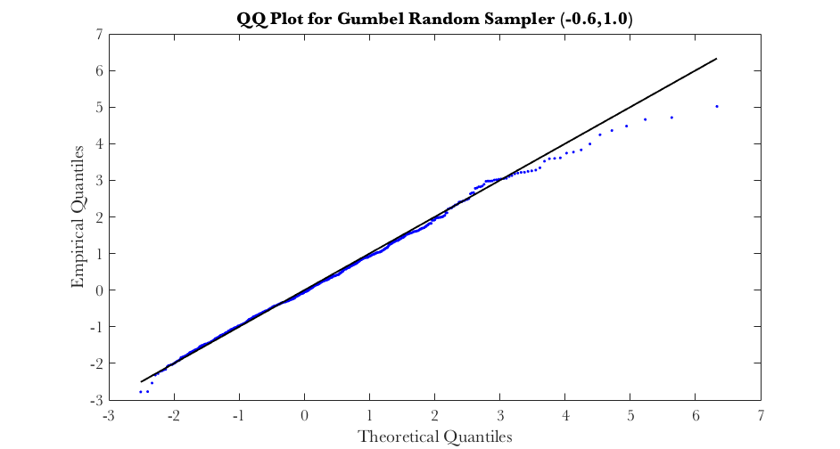
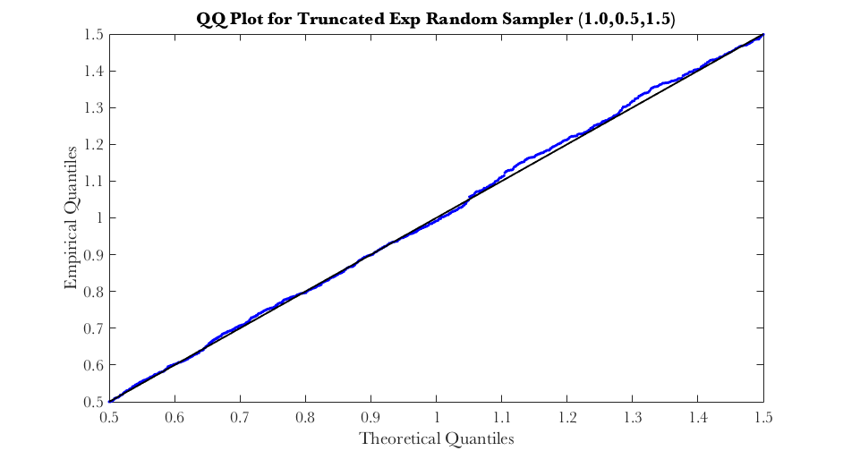
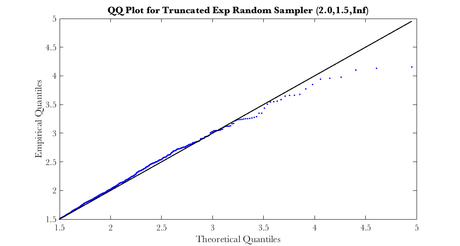
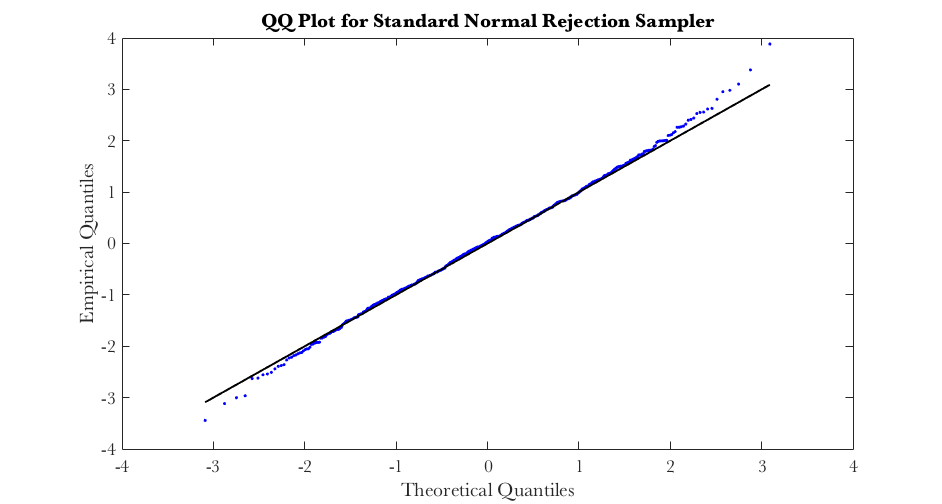
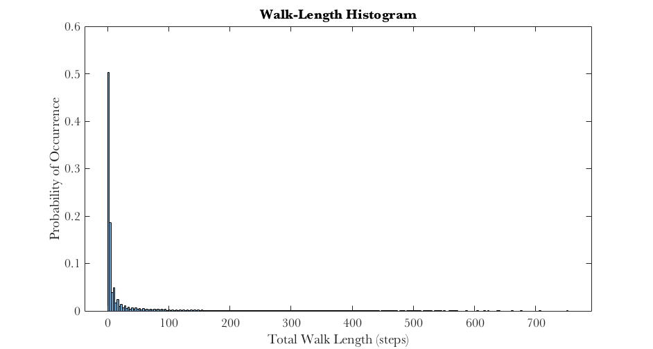
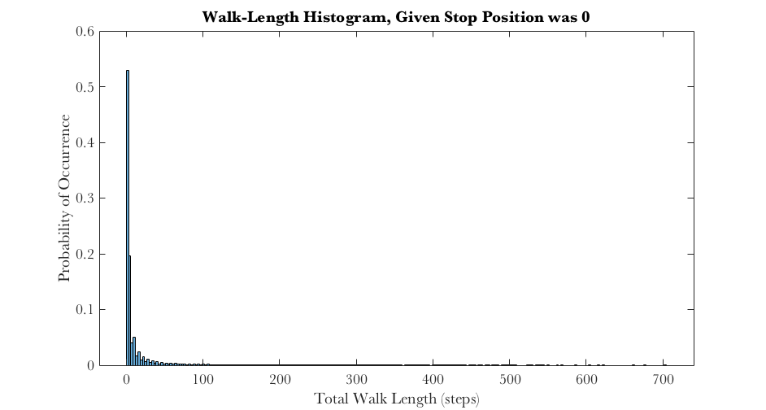
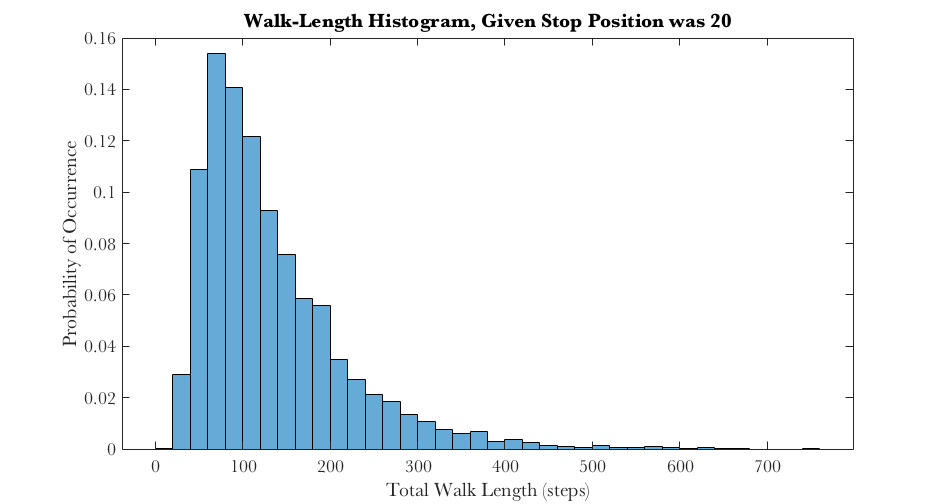

Contents
% Project4.m % Code to illustrate problems from Project 4 for the MA 589 Computational % Statistics course.
Problem 1 - Random Sampler (Gumbel and Truncated Exponential)
Draw random samples from Gumbel Distribution with one set of parameters and then from the truncated exponential distribution with two different sets of parameters
samples = zeros(1000,1); sigma = 1; mu = psi(1); % euler-mascheroni constant for ii=1:1000 Q = rand; % generate uniform random number samples(ii) = GumbelQuantile(Q,mu,sigma); % calculate inverse CDF end [F,X] = ecdf(samples); % empirical CDF Xtheory = GumbelQuantile(F,mu,sigma); figure; plot(Xtheory,X,'.b');hold on;plot(Xtheory,Xtheory,'k'); xlabel('Theoretical Quantiles');ylabel('Empirical Quantiles'); title(sprintf('QQ Plot for Gumbel Random Sampler (%3.1f,%3.1f)',mu,sigma)); % Truncated Exponential Distribution samples = zeros(1000,1); lambda = 1;a = 0.5;b = 1.5; for ii=1:1000 Q = rand; % generate uniform random number samples(ii) = TruncExpQuantile(Q,lambda,a,b); % calculate inverse CDF end [F,X] = ecdf(samples); % empirical CDF Xtheory = TruncExpQuantile(F,lambda,a,b); figure; plot(Xtheory,X,'.b');hold on;plot(Xtheory,Xtheory,'k'); xlabel('Theoretical Quantiles');ylabel('Empirical Quantiles'); title(sprintf('QQ Plot for Truncated Exp Random Sampler (%3.1f,%3.1f,%3.1f)',lambda,a,b)); % repeat for new parameters samples = zeros(1000,1); lambda = 2;a = 1.5;b = Inf; for ii=1:1000 Q = rand; % generate uniform random number samples(ii) = TruncExpQuantile(Q,lambda,a,b); % calculate inverse CDF end [F,X] = ecdf(samples); % empirical CDF Xtheory = TruncExpQuantile(F,lambda,a,b); figure; plot(Xtheory,X,'.b');hold on;plot(Xtheory,Xtheory,'k'); xlabel('Theoretical Quantiles');ylabel('Empirical Quantiles'); title(sprintf('QQ Plot for Truncated Exp Random Sampler (%3.1f,%3.1f,%3.1f)',lambda,a,b));  
Problem 1 - Results
The random samplers work quite well, especially in the bulk of the distributions (the part of the distributions with the most probability mass). As you move to the tails of the distributions, corresponding to the upper quantiles, the random samplers do not do as well. This is because there are relatively fewer samples generated at the tails, ie we need more data to accurately estimate the CDF and inverse CDF.
Problem 2 - K Categorical Distribution
Draw random samples for K-Categorical distribution given weights, code in CategoricalSamples.m and GumbelCatSamples.m
weights = [1,1,4,6,7,50,0.1]'; % create randomized weights K = length(weights); probs = weights./sum(weights); N = 1e4; X = CategoricalSamples(log(weights),N); % draw N random samples sampleProbs = zeros(size(probs)); for ii=1:K sampleProbs(ii) = mean(X==ii); end fprintf('Original Categorical Distribution Sampler\n'); fprintf('Category True Prob Sampler Prob\n'); disp([(1:K)',probs,sampleProbs]); % draw categorical samples using Gumbel max trick weights = [1,1,4,6,7,50,0.1]'; % create randomized weights K = length(weights); probs = weights./sum(weights); N = 1e4; X = GumbelCatSamples(log(weights),N); % use Gumbel max trick, draw N samples sampleProbs = zeros(size(probs)); for ii=1:K sampleProbs(ii) = mean(X==ii); end fprintf('Categorical Sampler Using Gumbel Distribution\n'); fprintf('Category True Prob Sampler Prob\n'); disp([(1:K)',probs,sampleProbs]);
Original Categorical Distribution Sampler
Category True Prob Sampler Prob
1.0000 0.0145 0.0139
2.0000 0.0145 0.0113
3.0000 0.0579 0.0633
4.0000 0.0868 0.0873
5.0000 0.1013 0.1065
6.0000 0.7236 0.7167
7.0000 0.0014 0.0010
Categorical Sampler Using Gumbel Distribution
Category True Prob Sampler Prob
1.0000 0.0145 0.0146
2.0000 0.0145 0.0147
3.0000 0.0579 0.0606
4.0000 0.0868 0.0894
5.0000 0.1013 0.1002
6.0000 0.7236 0.7191
7.0000 0.0014 0.0014
Problem 2 - Results
Both random samplers work quite well, with the samples accurately representing the underlying categorical probabilities in both cases.
Problem 3 - Rejection Sampling
Notes describe the sampling procedure. Code is contained in RejectionSampler.m
N = 1000; samples = RejectionSampler(N); % generate 1000 random samples [F,X] = ecdf(samples); % empirical CDF Xtheory = norminv(F,0,1); % get quantiles for standard normal figure; plot(Xtheory,X,'.b');hold on;plot(Xtheory,Xtheory,'k'); xlabel('Theoretical Quantiles');ylabel('Empirical Quantiles'); title('QQ Plot for Standard Normal Rejection Sampler'); [h,p] = kstest(samples); fprintf('KS Test for Standard Normal, p-value: %3.2f\n\n',p);
KS Test for Standard Normal, p-value: 0.74
Problem 3 - Results
The QQ plot shows a strong resemblance between the empirical quantiles and the theoretical quantiles. In addition, the one-sample KS test against a standard normal CDF shows a p-value >> 0.05. The one-sample KS compares the empirical CDF of the randomly-generated samples against the theoretical CDF of a standard normal distribution, with the null hypothesis that the data (samples) come from a standard normal. With p>>0.05, the test fails to reject the null. The samples are, at least, very close to approximating a standard normal distribution.
Problem 4 - Random Walk
This problem looks at a random walk in 1 dimension and estimates different expectations ... code in RandomWalkMC.m
% A) run random walk, get probability of landing at 0 and 20 N = 1e5; stopPosition = zeros(N,1); walkLen = zeros(N,1); p = 0.5; for ii=1:N [stopPosition(ii),walkLen(ii)] = RandomWalkMC(p); end stopCons = [0,20]; fprintf('MC Estimates of Random Walk\n\n'); fprintf('P0 = Probability of ending at 0 (PC)\n'); fprintf('P20 = Probability of ending at 20 (BP)\n\n'); fprintf('MC Estimate of P0: %3.3f\n',mean(stopPosition==stopCons(1))); fprintf('MC Estimate of P20: %3.3f\n\n',mean(stopPosition==stopCons(2))); % get bootstrap estimate of 95% confidence interval bootN = 1000; bootstrapEst = zeros(bootN,2); for ii=1:bootN inds = unidrnd(N,[N,1]); resample = stopPosition(inds); bootstrapEst(ii,1) = mean(resample==stopCons(1)); bootstrapEst(ii,2) = mean(resample==stopCons(2)); end alpha = 0.05; Q = quantile(bootstrapEst(:,1),[alpha/2,1-alpha/2]); fprintf('MC Bootstrap 95%% confidence interval on P0: [%3.4f , %3.4f]\n',Q(1),Q(2)); Q = quantile(bootstrapEst(:,2),[alpha/2,1-alpha/2]); fprintf('MC Bootstrap 95%% confidence interval on P20: [%3.4f , %3.4f]\n\n',Q(1),Q(2)); MCstdev = std(bootstrapEst(:,2)); % B) check the walk-length distribution % histogram of length of walk figure;histogram(walkLen,'normalization','probability'); xlabel('Total Walk Length (steps)'); ylabel('Probability of Occurrence'); title('Walk-Length Histogram'); fprintf('P200steps = Probability of taking more than 200 steps\n'); P200steps = mean(walkLen>200); fprintf('P200steps: %3.3f\n\n',P200steps); % C) conditional walk-length distributions % histogram of length of walk, given landed at position 0 newSamples = walkLen(stopPosition==stopCons(1)); figure;histogram(newSamples,'normalization','probability'); xlabel('Total Walk Length (steps)'); ylabel('Probability of Occurrence'); title('Walk-Length Histogram, Given Stop Position was 0'); % histogram of length of walk, given landed at position 20 newSamples = walkLen(stopPosition==stopCons(2)); figure;histogram(newSamples,'normalization','probability'); xlabel('Total Walk Length (steps)'); ylabel('Probability of Occurrence'); title('Walk-Length Histogram, Given Stop Position was 20'); % D) expected number of times student will be at position 18 N = 1e5; stopPosition = zeros(N,1); walkLen = zeros(N,1); pass18 = zeros(N,1); p = 0.5; for ii=1:N [stopPosition(ii),walkLen(ii),pass18(ii)] = RandomWalkMC(p); end fprintf('Expected number of times walker stands at 18: %3.3f\n',mean(pass18)); % E) importance sampler, re-run using pq = 0.55 fprintf('\nImportance Sampling Estimates\n\n'); N = 1e5; stopPosition = zeros(N,1); walkLen = zeros(N,1); weight = zeros(N,1); p = 0.5;pq = 0.55; for ii=1:N [stopPosition(ii),walkLen(ii),~,weight(ii)] = RandomWalkISMC(p,pq); end stopCons = [0,20]; fprintf('P0 = Probability of ending at 0 (PC)\n'); fprintf('P20 = Probability of ending at 20 (BP)\n\n'); fprintf('IS Estimate of P0: %3.3f\n',sum((stopPosition==stopCons(1)).*weight)/sum(weight)); fprintf('IS Estimate of P20: %3.3f\n\n',sum((stopPosition==stopCons(2)).*weight)/sum(weight)); % get bootstrap estimate of 95% confidence interval bootN = 1000; bootstrapEst = zeros(bootN,2); for ii=1:bootN inds = unidrnd(N,[N,1]); resample = stopPosition(inds); resampleweights = weight(inds); bootstrapEst(ii,1) = sum((resample==stopCons(1)).*resampleweights)/sum(resampleweights); bootstrapEst(ii,2) = sum((resample==stopCons(2)).*resampleweights)/sum(resampleweights); end alpha = 0.05; Q = quantile(bootstrapEst(:,1),[alpha/2,1-alpha/2]); fprintf('IS Bootstrap 95%% confidence interval on P0: [%3.4f , %3.4f]\n',Q(1),Q(2)); Q = quantile(bootstrapEst(:,2),[alpha/2,1-alpha/2]); fprintf('IS Bootstrap 95%% confidence interval on P20: [%3.4f , %3.4f]\n\n',Q(1),Q(2)); ISstdev = std(bootstrapEst(:,2)); fprintf('Ratio of Error on MC versus IS Estimates of P20: %3.3f\n',MCstdev/ISstdev);
MC Estimates of Random Walk P0 = Probability of ending at 0 (PC) P20 = Probability of ending at 20 (BP) MC Estimate of P0: 0.951 MC Estimate of P20: 0.049 MC Bootstrap 95% confidence interval on P0: [0.9494 , 0.9522] MC Bootstrap 95% confidence interval on P20: [0.0478 , 0.0506] P200steps = Probability of taking more than 200 steps P200steps: 0.016 Expected number of times walker stands at 18: 0.202 Importance Sampling Estimates P0 = Probability of ending at 0 (PC) P20 = Probability of ending at 20 (BP) IS Estimate of P0: 0.950 IS Estimate of P20: 0.050 IS Bootstrap 95% confidence interval on P0: [0.9491 , 0.9507] IS Bootstrap 95% confidence interval on P20: [0.0493 , 0.0509] Ratio of Error on MC versus IS Estimates of P20: 1.660  
Problem 4 - Results
The MC simulations seem to provide an accurate estimate of the different expectations for the random walk. For instance, the probability of ending the walk at position 20 is 0.05. 0.05 is 1/20, which makes intuitive sense given the configuration of the one-dimensional walking path. There are 19 spaces to get from the starting position (1) to position 20 and only 1 space to get from the starting position to position 0. With p=0.5, then 50% of the time we immediately end at position 0. 0% we end at position 0 in 2 steps, 12.5% we end at position 0 in 3 steps, and 6.25% we end at position 0 in 5 steps. The pattern gets complicated after 5 steps, and depends on all possible combinations of steps. But you can see that the final probability will depend very importantly on the starting position. If you change the starting position to position 2, then you get 0.1 or 1/10. With regards to using the importance sampler, it looks like that technique provides a significant improvement in terms of lowering the variance of the estimate of P20 (the probability that the walk ends at position 20). The ratio of the standard deviation of the MC estimate to the IS estimate was about 1.6.